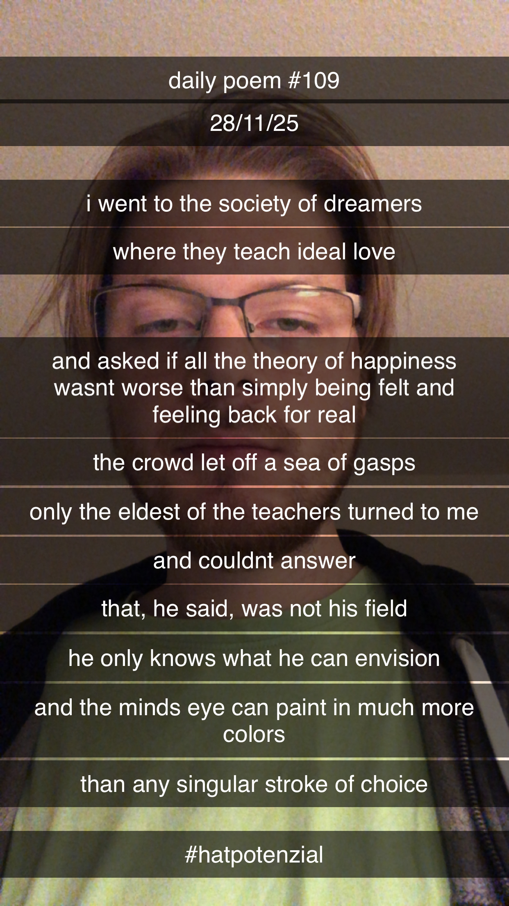

The Society of Dreamers
[109]I went to the society of dreamers
Where they teach ideal love
And asked if all the theory of happiness
Wasn't worse than simply being felt and feeling back for real.
The crowd let off a sea of gasps;
Only the eldest of the teachers turned to me –
And couldn't answer.
That, he said, was not his field;
He only knows what he can envision,
And the mind's eye can paint in much more colors
Than any singular stroke of choice.
